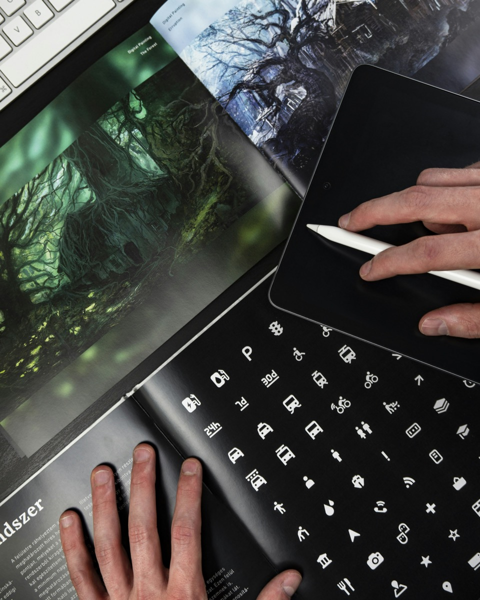

Practice
Positioning
Define the audience and articulate what a brand can credibly promise.
Write down the audience in ordinary language. A positioning statement earns its place when the team can use it to choose between two ideas.
Next · Identity systems →
Designing beyond the first impression
An identity has to work on a document, on a narrow screen and at a distance. A useful studio review tests the smallest and least glamorous applications alongside the hero composition.
Back to Northline →